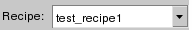

Calibre RealTime Recipe Editor Dialog Box in Pyxis Layout
To access: Click the button in the Calibre Options dialog.
The Calibre RealTime Recipe Editor edits a check selection recipe. There are two different views to toggle between in the dialog box: basic editing and advanced editing. The basic editing view enables you to perform very basic edits to RealTime DRC run recipes. The advanced editing view gives you precise control over the check types and which specific checks to include or exclude for any particular DRC run.
Description
Use the Calibre RealTime Recipe Editor to edit RealTime DRC run recipes.
Objects
Item |
Button |
Description |
|---|---|---|
New Recipe |
Displays the New Recipe Name dialog box. The new recipe is added to the list of recipes if it is not a duplicate, and becomes the active user-defined recipe. |
|
Import Recipe |
Opens an existing recipe from disk. Once imported, the recipe will be added to the user-defined list of recipes and will become the current recipe. |
|
Export Recipe |
Displays a file browser to select the export location. Only user-defined recipes may be exported.
|
|
Copy Recipe |
Creates a copy of the current recipe. The copy is named using the current recipe plus an underscore and a numeric extension. For example, “my_recipe” becomes “my_recipe_1”. If any blanks or commas exist in the name, they will be replaced by underscores. The new name is added to the list of recipes as a user-defined recipe, provided it is not a duplicate name. The copy becomes the current active recipe. |
|
Clear Recipe |
Clears the current user-defined recipe shown in the Recipe Combo box. Only user-defined recipes may be cleared. |
|
Rename Recipe |
Displays the Rename Recipe dialog box. |
|
Delete Recipe |
Deletes the recipe displayed in the Recipe Combo. You can only delete user-defined recipes. |
|
Undo |
|
Restores the previous recipe editing operation during the current session. |
Redo |
Restores the recipe editing operation performed during the current session by clicking the Undo button. |
Item |
Button |
Description |
|---|---|---|
Recipe Combo  |
Presents a list of user-defined and built-in recipes. User-defined recipes, when they exist, display at the top of the combo list. The built-in recipes are fixed as follows:
A Layer statement specifying a name for an original layer is required in the rule file in order to use the layer-based selections. |
|
Include |
Specify checks to include:
A Layer statement specifying a name for an original layer is required in the rule file in order to use the “Visible layer checks” and “Recently edited layer checks” selections. |
|
Exclude |
Specify checks to exclude:
|
|
Item |
Button |
Description |
Append Expression to Recipe |
Displays the pattern option and preview entries for the recipe selected in the Expression Tree field. |
|
Pattern option checkbox |
Activates the pattern entry field as well as a fresh preview scan using the current entry in the Pattern entry field as a scanning filter. |
|
Pattern entry field |
Displays patterns to filter in the Preview tree. The default value is “^”. The “^” filter searches for matches where the patterns match from the beginning. The “$” filter searches for matches where the patterns match in the end. A blank pattern filter searches for matches within the pattern at any point. |
|
Preview tree |
Displays a flat view where each item is the name of a check from the rule file. Each item may be included or excluded by using the check box next to the item. All items are checked, by default. |
|
Addition choice |
Adds selected expressions or checks to the Recipe definition tree. The “+” (plus sign) indicates that the current recipe definition will include those expressions or checks. Swaps the check state of any checks in the Preview trees except the tabbed Pattern tree. |
|
Subtraction choice |
Adds selected expressions to the Recipe definition tree. The “-” (minus sign) indicates that the current recipe definition will exclude those definitions. Swaps the check state of any checks in the Preview trees except the tabbed Pattern tree. |
|
Expression button |
Adds the selected item from the Expression tree to the Recipe definition tree with either a + sign or a - sign. |
|
Check button |
Adds the selected items from the visible Layer or Preview tree with either a + sign or a - sign. |
|
Recipe definition |
Displays a flat tree containing a list of all short-hand composition check definitions as well as individual checks. Checks with the + sign are included in the recipe definition whereas checks with the - sign are excluded. |
|
Move Up |
|
Moves the selected items in the Recipe definition tree up one position. |
Move Down |
Moves the selected items in the Recipe definition tree down one position. |
|
Delete |
|
Deletes all of the selected items in the Recipe definition tree. |
Resolve |
Resolves the contents of the Recipe definition tree into the individual rule file checks. Removes short-hand notations. |
|
Pattern field |
Re-displays the Recipe checks tree contents using the regular expression pattern typed into this field. The default pattern is “^”. |
|
Sorting choices combo box |
Offers four choices to control the check rules display order in the Recipe checks tree. |
|
Recipe checks tree |
Displays a flat tree containing a list of all the selected (checked) and unselected (unchecked) rules from the current rules file. |
|